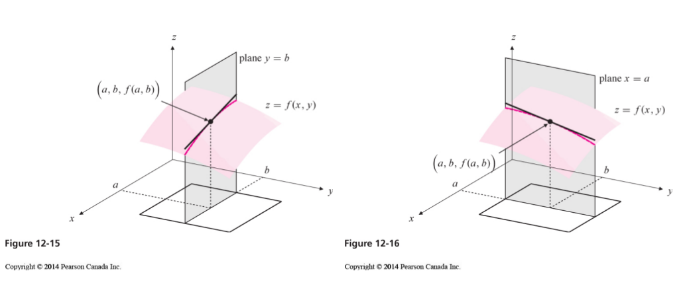
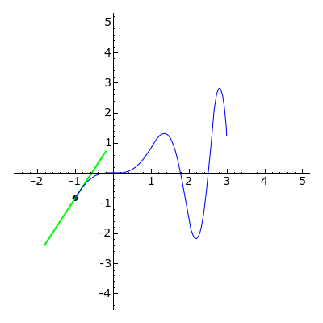
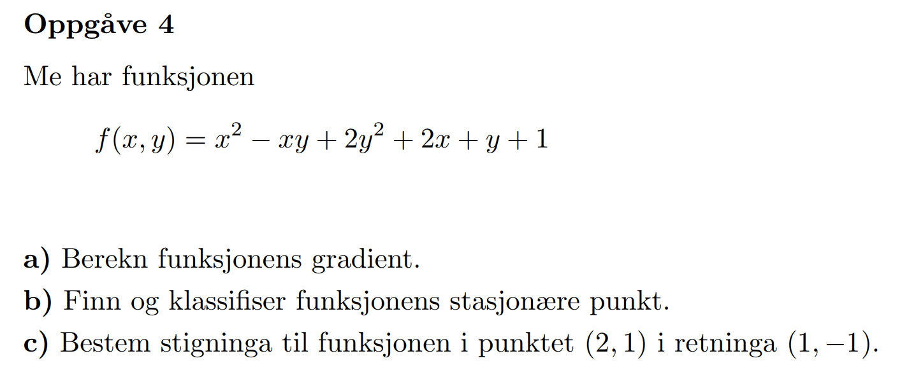
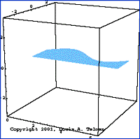

MAT106
Uke 17
23.04.2018
Alexander Lundervold
institutt for data- og realfag
På mobil? Swipe
Sist uke
Lineær algebra:
- Egenverdier og egenvektorer
- Diagonalisering og matrisepotenser
- Anvendelser av matrisepotenser (differenslikninger, diskrete dynamiske systemer)
Funksjoner av flere variabler:
- Hva er det?
- Partiellderivasjon.
- Tangentplan
Partiellderiverte
{kind=link}
Tangentplan
Denne uken
- Mer om derivasjon: gradient og retningsderiverte
- Ekstremalverdier (maks & min)
- Integrasjon
Gradient og retningsderivert

Gradienten: den grønne pilen
YouTube
Mye brukt i det som kalles «maskinlæring»
$x \in (-2,2), \quad y \in (-4,0), \quad z \in (-3,1)$
Husk: tangenten til $y=f(x)$:
Flat i lokale ekstremalverdier
Tangentplan horisontalt i lokale maks og min!
Sist gang:
Et kritisk punkt $(a,b)$ til $z=f(x,y)$ kan klassifiseres som lokalt minimum, maksimum eller sadelpunkt via Hesse-matrisen $$H = \left(\begin{array}{rr} f_{xx} & f_{yx} \\ f_{xy} & f_{yy}\end{array}\right).$$
For $(x,y) = (a,b)$:
- $\det(H) > 0$ og $\,f_{xx}>0$ $\,\,\Longrightarrow\,\,$ minimumspunkt
- $\det(H) > 0$ og $\,f_{xx}<0$ $\,\,\Longrightarrow\,\,$ maksimumsspunkt
- $\det(H) < 0$ $\,\,\Longrightarrow\,\,$ sadelpunkt
- $\det(H) = 0$ $\,\,\Longrightarrow\,\,$ ingen konklusjon
$x \in (-2,2), \quad y \in (-4,0), \quad z \in (-3,1)$
Eksamen H2013
{kind=link}
Husk: Idé bak integralet
$$\int_a^b f(x) \, \operatorname{dx}$$

"Uendelig sum av infinitesimale biter". Ideen brukes i en rekke ulike anvendelser
Kurvelengde


$$A = \int_a^b \sqrt{1 + [f'(x)]^2}\,\operatorname{dx}$$
Areal mellom kurver
 $$A = \int_a^b f(x) - g(x) \,\operatorname{dx}$$
$$A = \int_a^b f(x) - g(x) \,\operatorname{dx}$$
Omdreiningslegemer
{kind=link}
$$V = \int_a^b \pi [f(x)]^2 \, \operatorname{dx}$$
Dobbeltintegral og volum

Dobbeltintegral og volum